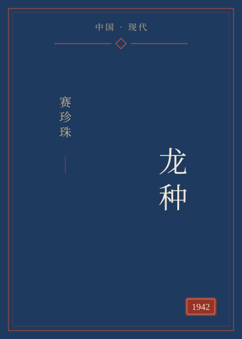
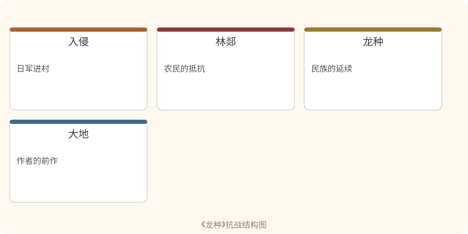

龙种
一、基本信息
| 作者 | 赛珍珠 |
|---|---|
| 成书/出版 | 1942年（作者页 B165 口径：龙种（Dragon Seed）） Pearl S. Buck — Encyclopaedia Britannica（百科全书） |
| 国别/地区 | 中国 |
| 时代 | 现当代 · 现代 |
| 体裁 | 长篇小说 |
| 语言 | 英语 |

《龙种》抗战结构图（主题·结构图）
二、创作背景
作者页（B165）：赛珍珠 major_works 载'龙种（Dragon Seed）'（B165 作者页定位，详见 dadi 条核对）。
题材（通说待核）：日军侵华下的中国村庄——农民的抵抗与'龙种'的延续。
三、内容脉络
日军入侵下的村庄： Ling翁？——通说待核：林郯一家与'龙种'（抵抗的种子）。
四、主要人物表
| 人物 | 身份 | 说明 |
|---|---|---|
| 林郯 | 农民 | （通说待核） |
五、主题与艺术特点
- 抗战中的农民史诗（通说）。
- '龙种'：民族的延续（通说待核）。
- 以英语写中国抗战（通说——赛珍珠视角）。
六、影响与评论
- 作者页：赛珍珠作品谱系（《大地》作者——B165 作者级定位）。
Pearl S. Buck — Encyclopaedia Britannica（百科全书） - 1942年出版后为美国读者理解中国抗战的窗口（通说待核）。
Pearl S. Buck — Encyclopaedia Britannica（百科全书）
七、阅读建议
难点
- 英语视角的中国书写。
- 抗战史背景。
- 《龙种》（漓江出版社等版本，通说待核）。
- 英文原版（公有领域渐近）。
《大地》三部曲之后阅读。
八、待核实
- 1942年出版（John Day说）核对。
- 林郯人名核对。
- 1944年电影改编待核。
本页主要来源
赛珍珠的其他收录作品：大地